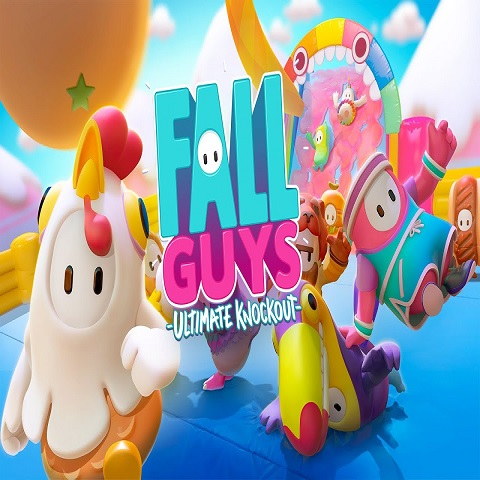

|  |
Es un juego que hasta 60 jugadores pueden competir en partidos similar a un Battle Royale. Los jugadores, representados como figuras con forma de gelatina, se mueven por un campo de juego tridimensional, con movimientos adicionales como saltar, agarrar/trepar o zambullirse para ayudar en el juego. El objetivo es calificar para las rondas posteriores completando con éxito cada uno de los minijuegos seleccionados al azar. Ciertos minijuegos implican correr hacia una línea de meta al final del mapa, mientras que otros agregan elementos de trabajo en equipo. En cada minijuego aparecen obstáculos alrededor del mapa para mayor complejidad. Los jugadores que son demasiado lentos o que no cumplen con ciertos requisitos para un minijuego son eliminados. En la ronda final, los pocos jugadores restantes compiten en una ronda final con un minijuego aleatorio diseñado para un grupo más pequeño de jugadores. El ganador de la partida es el último jugador en pie.
Usando una moneda del juego, "Kudos", los jugadores pueden comprar cambios cosméticos y emoticones para que su personaje los presuma en el juego. Los jugadores obtienen Kudos al completar partidas y obtienen "Coronas" (la moneda premium) al ganar. Algunos de los disfraces son de personajes de diferentes juegos, como Gordon Freeman de la serie Half-Life o Jacket de Hotline Miami. El juego admite microtransacciones para la compra de monedas adicionales en el juego. |
Al tener el juego tan solo 2 meses de vida, tan solo ha habido hasta el momento dos actualizaciones que se corresponde con la actualización de "Half-Middle Season", que quiere decir "Actualización de Media Temporada y la Actualización de la Temporada 2 (Season 2). Esta última salió el día 8 de octubre. La actualización está ambientada en la magia, caballeros, etc, y salieron nuevos mapas, sistemas para tramposos etc. |